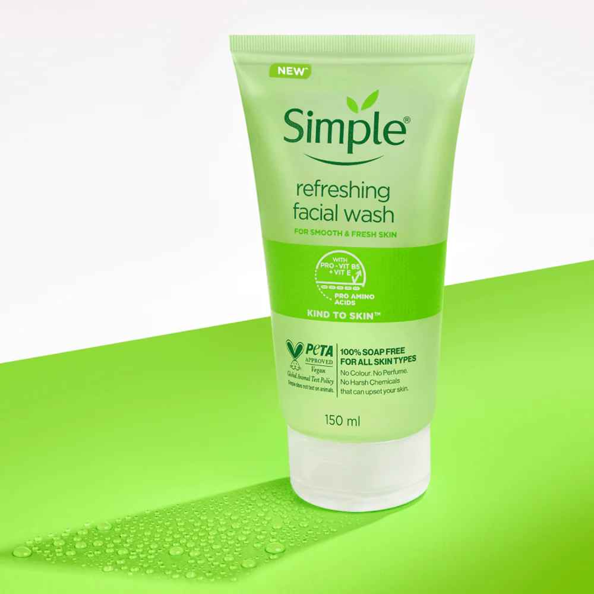
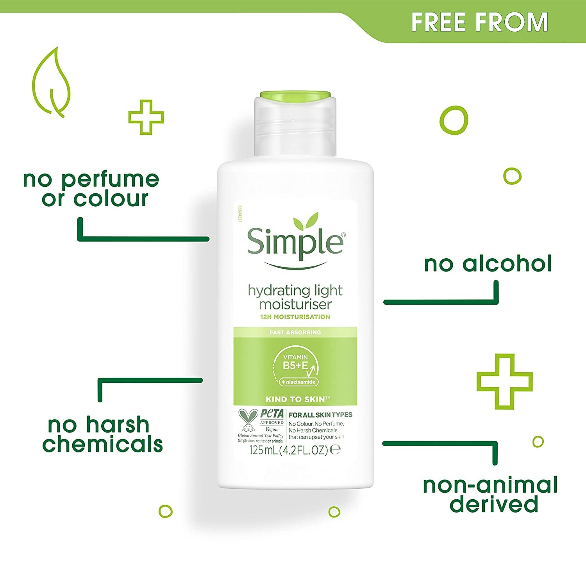
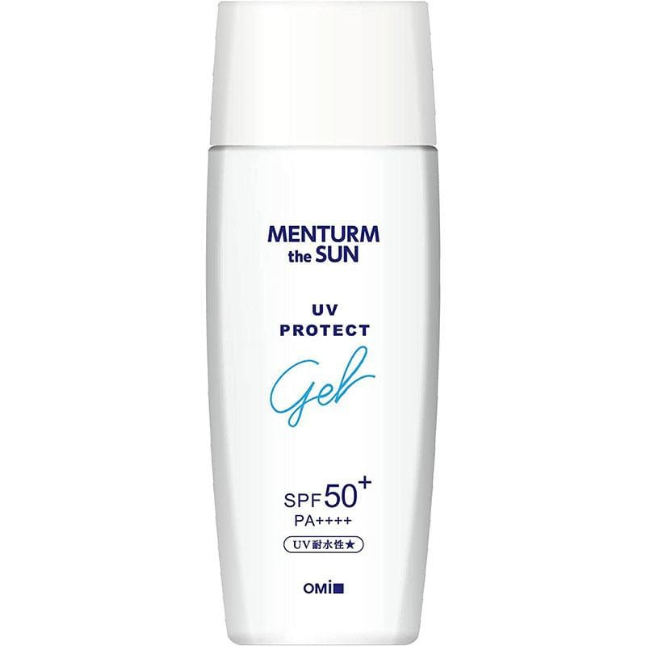
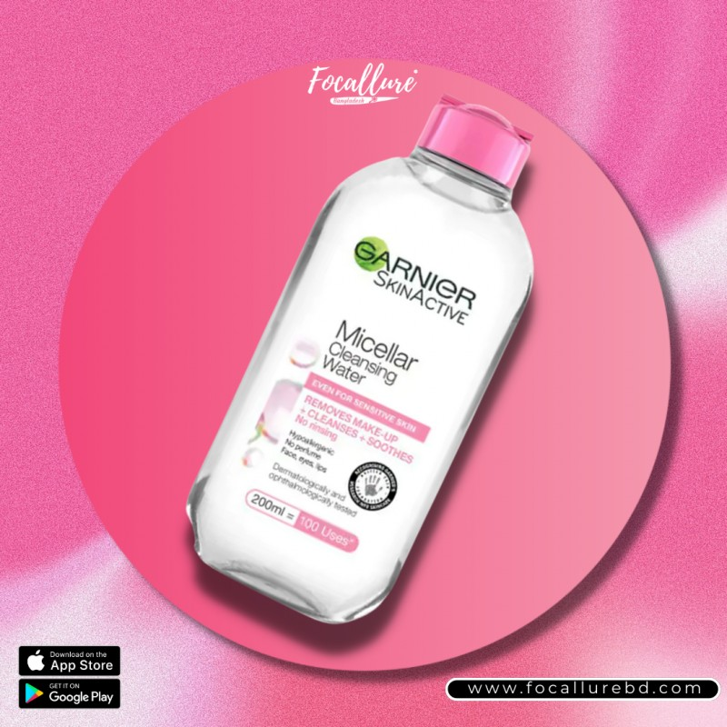

Overview: A gentle, soap-free gel cleanser designed for daily use on all skin types, including sensitive skin.
Ingredients:
Pros:
Summary: A reliable, minimalist cleanser suitable for everyday use.

Overview: A lightweight, fragrance-free moisturizer formulated to hydrate without greasiness. Ideal for normal to combination skin.
Pros:
Summary: Great for daily use, especially under sunscreen or makeup

Overview: A cooling gel sunscreen containing menthol, popular in some Asian skincare routines.
Pros:
Summary: Great if you like cooling sunscreens and your skin tolerates menthol.

Overview: Iconic micellar cleanser for face, eyes, and lips—no rinsing required. Affordable and widely available.
Pros:
Cons:
Summary: A budget-friendly, convenient makeup remover—but patch testing is advised, especially for sensitive or oily/acne-prone skin.
